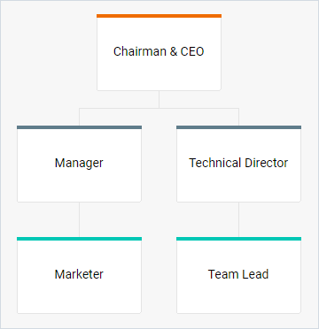
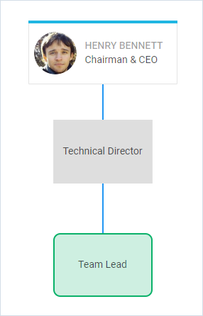
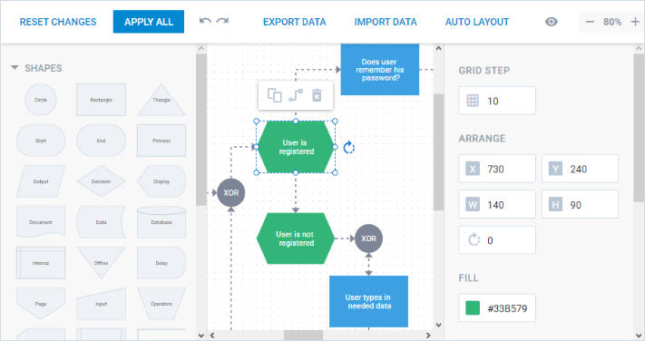
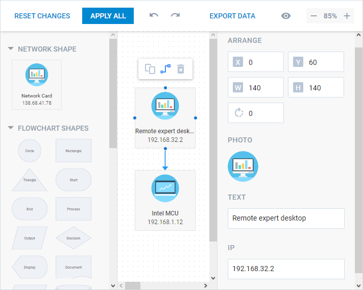
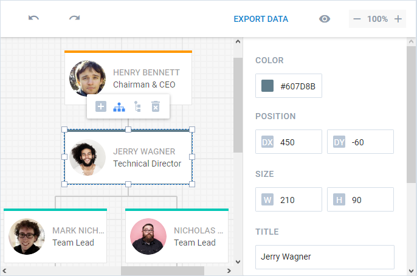
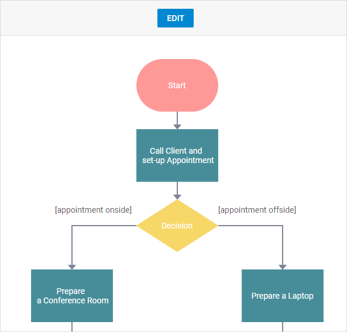
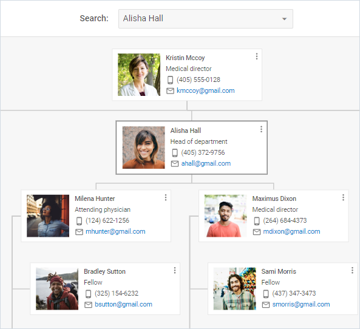
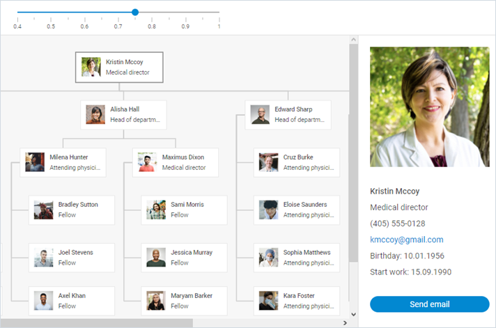

Overview
dhtmlxDiagram is a client-side chart component that allows you to display relations between some objects, concepts or living beings in a visual form: as a scheme, chart, organizational chart, etc. The diagram makes it easier to present tangled and bulky information in a simple and accessible way.
You can choose between several options:
- create a diagram out of preset shapes and connectors;
- render a predefined organizational chart;
- create custom shapes for building your own diagram;
- create a mixed diagram containing both the diagram and org chart shapes;
- initialize a Diagram editor and build a custom diagram that will meet your needs;
- initialize an Org Chart editor and easily create an org chart with desired structure and look;
- switch between the diagram (org chart) and the editor views and save changes made in the editor to the diagram, etc.
Diagram
dhtmlxDiagram component provides the possibility to make various diagrams using a predefined set of shapes and connectors, and experiment with their look and feel via the "native" and custom CSS classes.
You can choose shapes of desired types, link them by suitable connectors and build any type of a diagram that will show the sequence of some operations making up a particular process, like this:
The following list of guides will help you to learn more about dhtmlxDiagram:
Organizational Chart
There is also a predefined diagram type for rendering an organizational chart - Org Chart. This type of a diagram contains a set of shapes connected by lines in a hierarchical order.

Each shape has a text and a colored header line. Shapes located on the same level have headers of identical color. Optionally, you can add an image into a shape.
The following list of guides will help you to learn more about Org Chart:
Custom Diagram
You can build your own diagram or organizational chart by creating custom shapes of the desired appearance and linking them by suitable connectors, as in:


For more details about creating a custom shape, see the Configuring Diagram article.
Mixed Diagram
In addition to creating usual Diagram or Org Chart, dhtmlxDiagram provides a great opportunity to combine Diagram with Org Chart into a single diagram.

For more information about building a mixed diagram, see the following articles:
Diagram Editor
dhtmlxDiagram goes with an editor that lets you build your own diagram: you need just to choose desired shapes and set connectors between them. Besides you can:
- set precise positioning for shapes;
- define their width and height;
- specify the angle of rotation for a shape, if necessary;
- define the content and look of a shape: set a suitable shape color, define outline settings, insert a text inside and adjust its look and feel;
- modify the appearance of connectors.

There is a great possibility to set the size of the left panel, create sections for dividing shapes into groups and structuring them in the left panel. Besides, you can configure the right panel for editing a custom shape.

You can read more information about Diagram Editor.
Org Chart Editor
The Org Chart Editor is a part of the dhtmlxDiagram library that allows building an org chart quickly: you need to select a shape and add a new child for it. Also you can:
- set precise positioning for shapes;
- define their width and height;
- edit the content of a shape;
- set a suitable color of a shape header.

You can read more information about Org Chart Editor.
Live Editor
You can easily make changes to the diagram (or organizational chart) via switching between the diagram and the editor views. All changes made in the editor can be saved to the diagram.

For more information about Live Editor, see the related samples:
- Related sample: Live diagram edit - DHTMLX Diagram
- Related sample: Live Org chart edit - DHTMLX Diagram
Shape Search
dhtmlxDiagram provides you with a set of API that you can apply in order to make working with a Diagram more convenient. For example, you can implement a feature of searching a shape on request that helps you to simplify work with large diagrams.

Related sample: Shape search - DHTMLX Diagram
Diagram Scale
You can apply the zoom template to your diagram to be able to change its appearance via zooming the diagram in or out. Besides, you can make it possible to user to get the detailed information on the selected shape.

Related sample: Diagram template change while zooming - DHTMLX Diagram
What's Next
You can also skip the basics and head for detailed guides and instructions:
Back to top